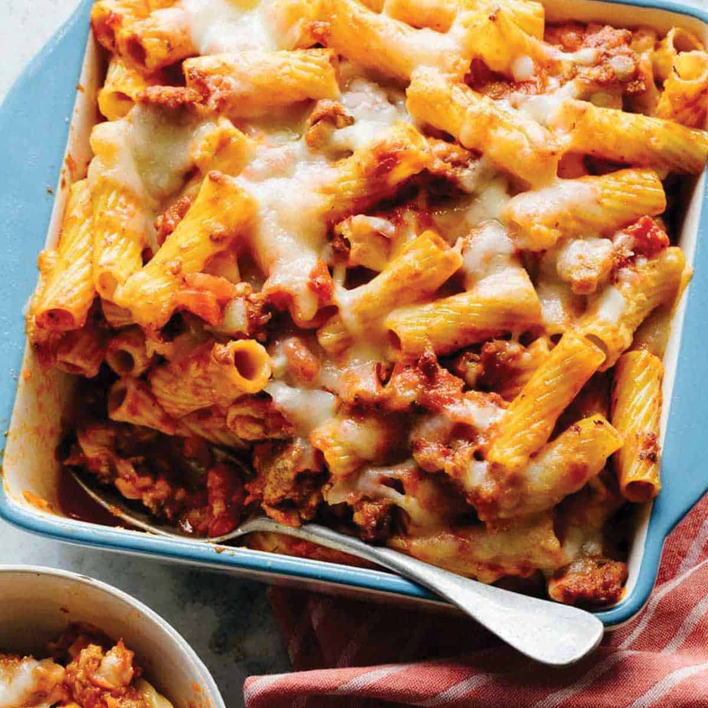

Baked Ziti
Back

Description
Description of the dish
Ingredients
- 1 pound ziti
- 4 cups jarred marinara
- 8 ounces mozzarella cheese
- 1 heaping cup ricotta cheese
- 1 cup grated Parmasan cheese
- 1 tablespoon oil olive
Steps
- Preheat oven to 350 degrees.
- Cook the pasta al dente.
- Drain the pasta.
- Toss the pasta with olive oil.
- Spread a thin layer of sauce in the of bottom of the dish.
- Dot the surface of the sauce with half the ricotta cheese.
- Ladle a spoonful of sauce into the pasta.
- Stir pasta well.
- Add the pasta into the casserole dish.
- Pour remaining sauce over the pasta.
- Dot the remaining ricotta cheese over the pasta.
- Sprinkle mozzarella and Parmasan on top.
- Bake uncovered until the top is lightly browned (about 20-25 minutes).
- Let stand for about 10 minutes before serving.
- Enjoy!